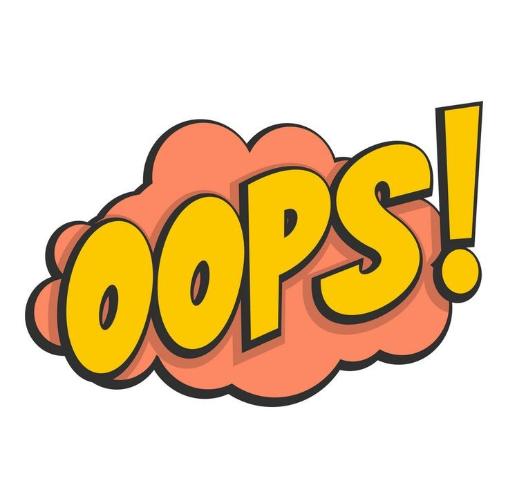

<div id="wrapper">
<mat-toolbar fxLayout="row" fxLayoutAlign="space-between center">
  <span></span>
  <button mat-icon-button mat-dialog-close color="primary">
    <mat-icon>close</mat-icon>
  </button>
</mat-toolbar>

    
    <div class="button-row">
        <button id="try-again-btn" (click)="closeDialog('tryAgain')"><i>🔁</i> Try Again</button>
        <button id="next-btn" (click)="closeDialog('next')"><i>➡️</i> Next</button>
    </div>
</div>